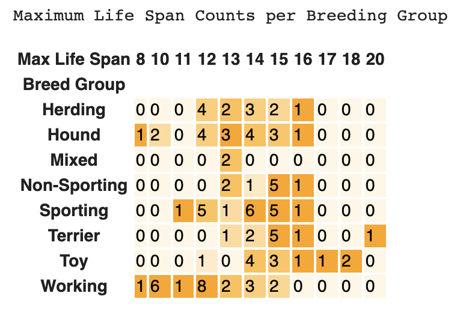
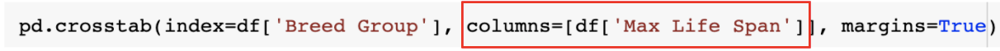
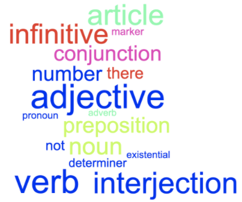

Lesson 9 - Cross Tabulation Charts
At the end of this lesson, you will be able to:
- Create a crosstab chart to display counts of how many times combinations of values appear in a dataset.
Crosstab
A crosstab (short for cross-tabulation) chart counts how many times each combination of values shows up in a dataset. See what you can figure out from the crosstab chart below - try these questions:
- How many "Herding" breeds live a maximum of 12 years?
- What is the most common maximum life span for "Working" breeds?
- Which breed group lives the shortest?
- Which breed group lives the longest?
- How do you know? How confident are you in your answers?
Show Solution
All of the questions can be answered from the chart. Here's how:
- 4 Herding breeds have a maximum life span of 12 years. Find the "Herding" row, slide over to the "12" column, and read the count in that cell.
- 12 years. In the "Working" row, the biggest count is 8, and it sits in the 12-year column - more Working breeds have a max life span of 12 than any other value.
- Working leans shortest. The only 8-year breeds in the whole table are one Hound and one Working breed, but look at where the Working row bunches up: 16 of its 23 breeds (1 + 6 + 1 + 8) have a max life span of 12 years or less, and no Working breed goes past 15. No other group is stacked that far to the left.
- It depends what "longest" means! The single longest-lived value belongs to a Terrier - one breed with a max life span of 20 years. But Toy breeds cluster at the high end: 1 breed at 17 and 2 at 18, more breeds past 16 than any other group. "One standout Terrier" and "Toys generally run long" are both fair readings - which is exactly why you should state which question you're answering.
- Moderately—with caveats. These answers describe this dataset of 105 breeds, not all dogs everywhere. Confidence also depends on how many breeds support each answer: “Working breeds bunch at 10–12 years” rests on 23 breeds, while “Terriers live longest” rests on one 20-year breed out of 10. The Mixed group contains only two breeds, which supports very little generalization.

Information from crosstab charts
So, to sum up: crosstab charts count how often pairs of values from two columns appear together.
Useful for:
- Finding the most / least common combinations of values in two columns
- Finding patterns across two columns
- Exploring two columns when one or both are strings (text)
- Discrete data (counts)
Not useful:
- If either column has too many values (the chart would be enormous)
Seaborn
Seaborn, the Python chart library introduced in Lesson 1, can turn a crosstab into a heatmap. Color intensity makes larger and smaller counts easier to locate than they are in an undifferentiated grid of numbers.
Open this Dogs Crosstab Colab Notebook and make a copy. Run the program to see how it works. What other questions can you answer about Breed Groups?
To investigate a different column, swap in its name as shown below:

Activity - Words

On your own or with a partner, dig into a new dataset - this one about popular words and their parts of speech. Open up this Words Colab Notebook and make a copy. Make the crosstab chart (fill in the columns to use) and answer the questions in the Notebook.If you have any questions, post them on the Ask Questions! discussion topic.